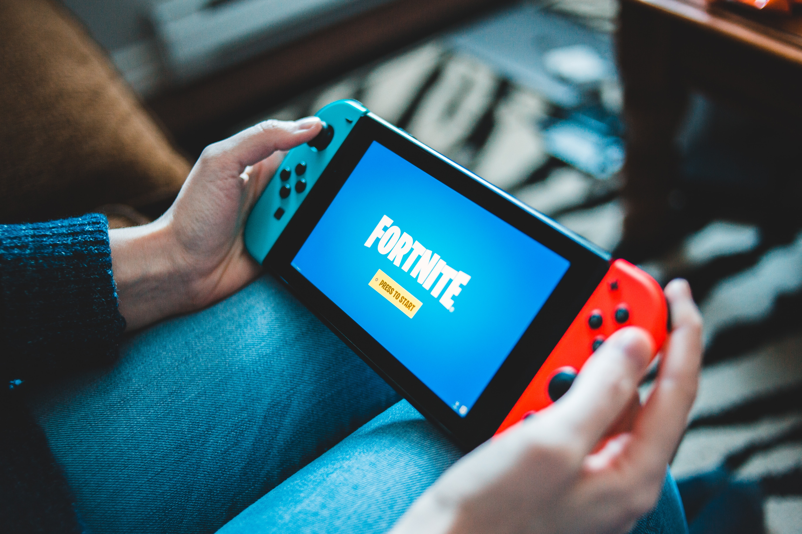

Welcome to Fortnite Gaming
Fortnite was released in 2017 and was created by Epic Games. Fortnite is a genre known for survival. When playing Fortnite you have to be the last one standing to win the victory royale. Fortnite is a great game because not only is it free, but you are able to play and communicate with people around the world. Fortnite allows you to play online on any gaming platform for free, this meaning if you are playing from a PC, Xbox, Playstation, etc. you are able to play together. There is a way you are able to add friends and play together in different setting modes so that if your team is the last one standing you all win together. Other than this, there are also other setting modes to choose from so that everyone can enjoy while playing.
I started playing Fortnite on my mobile device with a friend that was playing on the Nintendo Switch. Although, some of the setting are just a little different the game still works the same on every platform. I enjoy playing Fortnite with friends because it is sometimes challenging and makes you think a little harder on how to survive and be the last man standing. I enjoy that whoever you are friends with on the game, you are able to create a party and can all talk together while you play. This great option helps you and your teamates stick together and win the victory royale. Not only can you talk to just friends, but if you have the party set on public anyone can join which allows you to communicate with others creating a connection between the people playing Fortnite together. In all I believe this gives people a learning experience in a fun way because you are able to learn to communicate better while also having fun playing a game.
